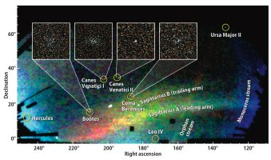
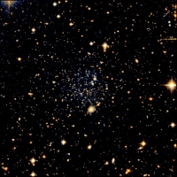

January 9, 2007
|
+ enlarge  |
|
Researchers from the Sloan Digital Sky Survey (SDSS-II) announced the discovery of eight new dwarf galaxies, seven of them satellites orbiting the Milky Way. They resemble systems cannibalized by the Milky Way billions of years ago to build up its stellar halo and thick disk.
The systems discovered by the SDSS-II in the last three years are comparable in number to all the Milky Way satellites detected in the preceding 70 years. They help close the gap between the observed number of dwarf satellites and theoretical predictions.
Credit — Vasily Belokurov, SDSS-II Collaboration and reproduced by permission, copyright 2007, Astronomy magazine, Kalmbach Publishing Co. |
|
+ enlarge  |
|
One of the most intriguing finds is Leo T, about 1.4 million light years away, on the fringes of the Milky Way's gravitational influence. Distinct from the other finds, Leo T has old and young star populations, and its star-forming days may not be over. In the preceding illustration, Leo T — whose discovery was confirmed only in the last month — would be located roughly behind arm A of the Sagittarius stream (144 degrees Right ascension, 17 degrees Declination).
Credit — Mike Irwin, the SDSS-II Collaboration |
SEATTLE — With the prospect of finding dozens of new dwarf systems in our Local Group of galaxies, an international team of researchers from the Sloan Digital Sky Survey (SDSS-II) has moved the count ahead with the discovery of seven — and perhaps eight — new satellites of the Milky Way.
"Cold dark matter models predict that there should be tens to hundreds more dwarf galaxies in the Local Group than have been observed, if all dark matter halos are lit up with stars," explains Dan Zucker, a member of the team from Cambridge University. "In less than a year, we have used SDSS-II data to find seven new Milky Way dwarf satellites. We've just discovered an eighth new dwarf, but we're not sure this one is a Milky Way satellite."
"We've found almost as many new Milky Way satellites as were detected in the previous 70 years," says Zucker's co-investigator Vasily Belokurov, also of Cambridge.
The discovery, "A New Population of Ultra-faint Local Group Galaxies," was announced today at the American Astronomical Society's meeting in Seattle.
Dwarf galaxies contain, at most, a few million stars and they often orbit around much larger galaxies such as the Milky Way. In its simplest form, the leading theory of galaxy formation predicts that the Milky Way should have a hundred or more surrounding dwarfs, but only a handful were known before SDSS-II.
The new dwarfs have some unusual properties. "They're more like hobbits than dwarfs," comments Belokurov, since they are smaller and fainter than most previously known satellites. Several of the newly discovered systems appear to be on the verge of disruption — probably by the tidal gravity of the Milky Way — and the Ursa Major II dwarf seems to already be in several pieces. "They look as though they're being ground up," notes Belokurov.
Current theories of galaxy assembly suggest that many, perhaps all, of the stars in the halo and thick disk of the Milky Way originated in smaller dwarf galaxies, which were dissolved when they merged into the Milky Way itself.
"The new dwarfs are really just the crumbs from the galactic feast," says Zucker. "Most of the merging happened early on — billions of years ago — and what we're seeing here are the leftovers."
The SDSS-II is a unique resource for finding Milky Way satellites because its deep, multi-color imaging allows detection of much fainter systems than were previously visible. The new objects are found using sophisticated computer algorithms that troll the digital data to find groupings of related stars. "But the SDSS-II covers only a fifth of the sky," notes Cambridge co-investigator Wyn Evans, "so there must be many more dwarfs out there."
The seven new Milky Way satellites all lie in the area of sky around the North Galactic Pole surveyed by the SDSS-II. There are two new dwarfs in the constellation of Canes Venatici (the Hunting Dogs), one in Bootes (the Herdsman), one in Leo (the Lion), one in Coma Berenices (Bernice's Hair), one in Ursa Major (the Great Bear) and one in Hercules.
The eighth and newest discovery may be the most intriguing. Named Leo T, it is about 1.4 million light years away, on the fringes of the Milky Way's gravitational influence.
"It may be a 'free-floating' Local Group dwarf, rather than a satellite of the Milky Way," notes team member Sergey Koposov of the Max Planck Institute for Astronomy in Heidelberg. In addition to its greater distance, Leo T is distinct from the previous seven discoveries in that it has both populations of fairly old stars (greater than five billion years old) and comparatively young populations (less that one billion years old). It also appears to have neutral hydrogen gas, so its star-forming days may not be over.
Leo T could be the bellwether of a large population of faint galaxies that reside in the Local Group but are not closely associated with either the Milky Way or the Andromeda galaxy. Because it's too distant to be strongly influenced by the Milky Way's tides, Leo T's low luminosity (the equivalent of roughly 50,000 Suns) is likely intrinsic, not a consequence of tidal stripping of loosely bound stars.
"Leo T has probably always been very faint, retaining its gas and slowly forming stars in relative isolation," comments Mike Irwin, a discovery team member and Cambridge University astronomer.
In combination with previously discovered systems from the SDSS-II and other sky surveys, the large number of new dwarfs changes the complexion of the cold dark matter theory's "missing satellite" problem. "These discoveries bring the data and the theory closer together," comments Zucker, though there may still be a gap between them.
Other members of the SDSS-II discovery team include Mark Wilkinson, Mike Fellhauer, and Gerry Gilmore of Cambridge University, and Jelte De Jong and Hans-Walter Rix of the Max Planck Institute for Astronomy.
The new finds are part of SEGUE (the Sloan Extension for Galactic Understanding and Exploration), one of three surveys comprising SDSS-II. "The results from SDSS-I showed us that there was a great potential for finding new dwarf galaxies and the stars that have been ripped away from them by the Milky Way's gravity. They were one of the major reasons we undertook SEGUE," explains SEGUE founder Heidi Jo Newberg of Rensselaer Polytechnic Institute. "SDSS-II is likely to turn up more of these dwarf galaxies by the time it is done."
The Sloan Digital Sky Survey-II is the most ambitious survey of the sky ever undertaken. With more than 300 astronomers and engineers in 25 institutions around the world, the SDSS-II is continuing to map one quarter of the entire sky, determining the position and brightness of hundreds of millions of celestial objects, including the measurement of distances to more than a million galaxies and quasars from the Apache Point Observatory in New Mexico. In addition, the SEGUE (Sloan Extension for Galactic Understanding and Exploration) will undertake the mapping of the structure and stellar makeup of the Milky Way Galaxy. The new Supernova Survey will repeatedly scan a 300 square degree area to detect and measure supernovae and other variable objects.
Funding for SDSS-II has been provided by the Alfred P. Sloan Foundation, the Participating Institutions, the National Science Foundation, the U.S. Department of Energy, the Japanese Monbukagakusho, and the Max Planck Society.
The SDSS is managed by the Astrophysical Research Consortium for the Participating Institutions. The Participating Institutions are the American Museum of Natural History, Astrophysical Institute Potsdam, University of Basel, Cambridge University, Case Western Reserve University, University of Chicago, Drexel University, Fermilab, the Institute for Advanced Study, the Japan Participation Group, Johns Hopkins University, the Joint Institute for Nuclear Astrophysics, the Kavli Institute for Particle Astrophysics and Cosmology, the Korean Scientist Group, the Chinese Academy of Sciences (LAMOST), Los Alamos National Laboratory, the Max-Planck-Institute for Astronomy (MPIA), the Max-Planck-Institute for Astrophysics (MPA), New Mexico State University, Ohio State University, University of Pittsburgh, University of Portsmouth, Princeton University, the United States Naval Observatory, and the University of Washington.